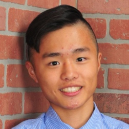

Noah Sternick
(Build Team, Drive Team Coach)
Noah Sternick is a sophomore at Natick High School. Noah enjoys playing video games and participates in both the build team and tactical team. As the driver team coach, he has read the entire game manual and makes sure to have an effective understanding of each match. Outside of robotics, Noah is a member of Boy Scout Troop 7 and in middle school he was a member of the Kennedy Middle School FLL team.
|
Grayson Stokes
(Build Team)
Grayson Stokes is a sophomore at Natick High School. This is his second year of robotics. Grayson enjoys playing video games and is thrilled to be an active member of the build team this year. Recently, Grayson volunteered as a Game Announcer at Natick High School's Redhawk Rumble Qualifier. Outside of robotics, Gray is a member of the Game Development club.
|
Ella Gerrard
(Build Team)
Ella Gerrard is a sophomore at Natick High School. She is a new member of the team and this is her first year doing robotics. She also participates in Field Hockey, Softball, and Band but she enjoys coming to robotics to learn building and problem solving skills. Ella works hard to help the team with technical challenges and is looking forward to what can be accomplished.
|
Tim Stecko
(Build Team)
Tim Stecko is a sophomore at Natick High School. He has been involved in some form of robotics ever since he joined an FLL team in 5th grade. He has been a member of our team for two years. When he isn’t at robotics, Tim enjoys playing video games, gardening, and being a part of the Troop 7 Boy Scouts. He also plays the trumpet for the Natick High Band and enjoys biking and skiing.
|
Mich Toryu
(Programming Team, Outreach Team)
Mich Toryu is a sophomore at Natick High School. In addition to being on the programming team, he is also the team’s unofficial pun co-leader along with Thien Tran. In his spare time he plays video games, makes music, and edits videos. In addition to robotics, he is also a member of the Improv Club, Wind Ensemble, and was in the pit band for the NHS drama production of Fiddler on the Roof.
|

Arnold Lin
(Build Team)
Arnold Lin is a senior at Natick High School. This is his first year doing robotics. He is very outgoing and is interested in pursuing a degree in Computer Engineering in college. Arnold designed our team marker to be easily manageable in autonomous. Outside of robotics, Arnold runs, hangs out with friends, goes shopping, and eats a lot. He also enjoys expressing his opinions.
|
Dylan Li
(Programming Team)
Dylan Li is a sophomore at Natick High School. Dylan has taken intro to Javascript and Python courses in the past, and with these courses he has developed an interest in computer programming. He is currently taking AP Computer Science to learn Java, which we use to program our robot. Outside of robotics, he enjoys playing video games with his friends and cooking.
|
Allen Cheung
(Build Team, Outreach Team)
Allen Cheung is a sophomore at Natick High School. He is a new member of the team. He likes to challenge himself with math and science problems. During school, he is always focused on his work and finds challenging problems to do when he has time. He is also on the Natick High School Swim Team and is the treasurer of Mandarin club. Allen likes to eat food and read book.
|
Jon Powsner
(Build Team)
Jon Powsner is a senior at Natick High School. This is his third year doing robotics. He enjoys playing video games and hanging out with his friends. In robotics, he enjoys building the robot and driving the robot. During school, he likes to eat at lunch with his friends and enjoys learning about math. Outside of school, he spends a lot of his time with his family and he spends some time exercising.
|